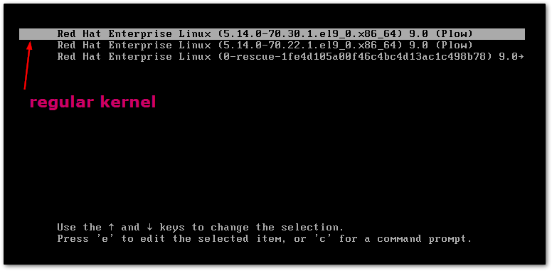
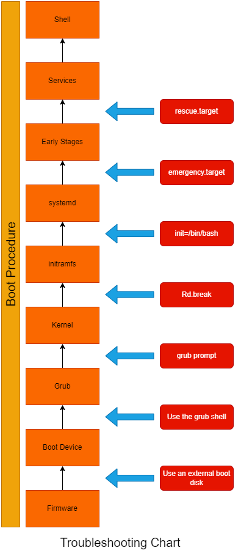
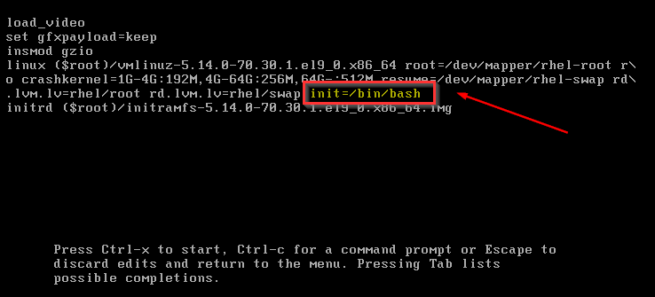
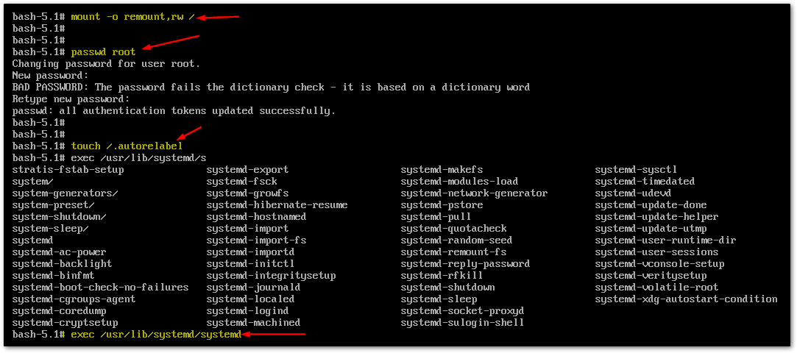

Module 3 Module 4 Module 5 Module 6 Module 7
systemd.unit=resuce.target
Press c to enter the Grub2 command mode

[root@rhcsaserver student]# cat /etc/default/grub GRUB_TIMEOUT=5 GRUB_DISTRIBUTOR="$(sed 's, release .*$,,g' /etc/system-release)" GRUB_DEFAULT=saved GRUB_DISABLE_SUBMENU=true GRUB_TERMINAL_OUTPUT="console" GRUB_CMDLINE_LINUX="crashkernel=1G-4G:192M,4G-64G:256M,64G-:512M resume=/dev/mapper/rhel-swap rd.lvm.lv=rhel/root rd.lvm.lv=rhel/swap" GRUB_DISABLE_RECOVERY="true" GRUB_ENABLE_BLSCFG=true
[root@rhcsaserver student]# grub2-mkconfig -o /boot/grub2/grub.cfg Generating grub configuration file ... Found linux image: /boot/vmlinuz-5.14.0-70.30.1.el9_0.x86_64 Found initrd image: /boot/initramfs-5.14.0-70.30.1.el9_0.x86_64.img Found linux image: /boot/vmlinuz-5.14.0-70.22.1.el9_0.x86_64 Found initrd image: /boot/initramfs-5.14.0-70.22.1.el9_0.x86_64.img File descriptor 3 (pipe:[43546]) leaked on vgs invocation. Parent PID 4292: grub2-probe File descriptor 9 (pipe:[44543]) leaked on vgs invocation. Parent PID 4292: grub2-probe File descriptor 3 (pipe:[43546]) leaked on vgs invocation. Parent PID 4292: grub2-probe File descriptor 9 (pipe:[44543]) leaked on vgs invocation. Parent PID 4292: grub2-probe Adding boot menu entry for UEFI Firmware Settings ... done
graphical.target
When enabling a unit, it is added to a specific target.
Can use systemctl list-dependencies to see the current target along with other dependencies.
For every servie under "[Install]", there is a section WantedBy=xxx.target. A good example can be seen with sshd.service (look at the last line)
[root@rhcsaserver student]# systemctl cat sshd.service # /usr/lib/systemd/system/sshd.service [Unit] Description=OpenSSH server daemon Documentation=man:sshd(8) man:sshd_config(5) After=network.target sshd-keygen.target Wants=sshd-keygen.target [Service] Type=notify EnvironmentFile=-/etc/sysconfig/sshd ExecStart=/usr/sbin/sshd -D $OPTIONS ExecReload=/bin/kill -HUP $MAINPID KillMode=process Restart=on-failure RestartSec=42s [Install] WantedBy=multi-user.target
[root@rhcsaserver student]# systemctl get-default graphical.target
[root@rhcsaserver student]# systemctl set-default multi-user.target Removed /etc/systemd/system/default.target. Created symlink /etc/systemd/system/default.target → /usr/lib/systemd/system/multi-user.target.

Find the line that loads the linux kernel and add init=/bin/bash. 
mount -o remount, rw / (making filesytem rewriteable)

systemctl enable --now debug-shell.service to enable debug shell. Reboot. Use CTRL+ALT+F9 to access debug shell.[student@rhcsaserver ~]$ ip addr show 1: lo: <LOOPBACK,UP,LOWER_UP> mtu 65536 qdisc noqueue state UNKNOWN group default qlen 1000 link/loopback 00:00:00:00:00:00 brd 00:00:00:00:00:00 inet 127.0.0.1/8 scope host lo valid_lft forever preferred_lft forever inet6 ::1/128 scope host valid_lft forever preferred_lft forever 2: ens160: <BROADCAST,MULTICAST,UP,LOWER_UP> mtu 1500 qdisc fq_codel state UP group default qlen 1000 link/ether 00:0c:29:93:53:f5 brd ff:ff:ff:ff:ff:ff altname enp3s0 inet 192.168.40.130/24 brd 192.168.40.255 scope global noprefixroute ens160 valid_lft forever preferred_lft forever inet 10.0.0.10/24 brd 10.0.0.255 scope global noprefixroute ens160 valid_lft forever preferred_lft forever inet6 fe80::20c:29ff:fe93:53f5/64 scope link noprefixroute valid_lft forever preferred_lft forever
[student@rhcsaserver ~]$ ip route show default via 192.168.40.2 dev ens160 proto dhcp src 192.168.40.130 metric 100 10.0.0.0/24 dev ens160 proto kernel scope link src 10.0.0.10 metric 100 192.168.40.0/24 dev ens160 proto kernel scope link src 192.168.40.130 metric 100
[student@rhcsaserver ~]$ ping 8.8.8.8 PING 8.8.8.8 (8.8.8.8) 56(84) bytes of data. 64 bytes from 8.8.8.8: icmp_seq=1 ttl=128 time=19.9 ms 64 bytes from 8.8.8.8: icmp_seq=2 ttl=128 time=16.5 ms 64 bytes from 8.8.8.8: icmp_seq=3 ttl=128 time=26.2 ms 64 bytes from 8.8.8.8: icmp_seq=4 ttl=128 time=15.1 ms 64 bytes from 8.8.8.8: icmp_seq=5 ttl=128 time=17.9 ms ^C --- 8.8.8.8 ping statistics --- 5 packets transmitted, 5 received, 0% packet loss, time 4008ms rtt min/avg/max/mdev = 15.102/19.120/26.230/3.890 ms
[student@rhcsaserver ~]$ ping google.com PING google.com (142.251.32.78) 56(84) bytes of data. 64 bytes from yyz12s07-in-f14.1e100.net (142.251.32.78): icmp_seq=1 ttl=128 time=19.0 ms 64 bytes from yyz12s07-in-f14.1e100.net (142.251.32.78): icmp_seq=2 ttl=128 time=18.0 ms 64 bytes from yyz12s07-in-f14.1e100.net (142.251.32.78): icmp_seq=3 ttl=128 time=14.5 ms 64 bytes from yyz12s07-in-f14.1e100.net (142.251.32.78): icmp_seq=4 ttl=128 time=20.6 ms ^C --- google.com ping statistics --- 4 packets transmitted, 4 received, 0% packet loss, time 3005ms rtt min/avg/max/mdev = 14.450/17.996/20.581/2.245 ms
[student@rhcsaserver ~]$ dig google.com ; <<>> DiG 9.16.23-RH <<>> google.com ;; global options: +cmd ;; Got answer: ;; ->>HEADER<<- opcode: QUERY, status: NOERROR, id: 3384 ;; flags: qr rd ra; QUERY: 1, ANSWER: 1, AUTHORITY: 0, ADDITIONAL: 1 ;; OPT PSEUDOSECTION: ; EDNS: version: 0, flags:; MBZ: 0x0005, udp: 4096 ;; QUESTION SECTION: ;google.com. IN A ;; ANSWER SECTION: google.com. 5 IN A 142.251.32.78 ;; Query time: 5 msec ;; SERVER: 192.168.40.2#53(192.168.40.2) ;; WHEN: Fri Jan 06 02:00:02 EST 2023 ;; MSG SIZE rcvd: 55
network
Use top to get a generic image, and more specialized tools only if you have a strong indication of what is wrong.
2 25 means running the command at 2 second interval, 25 times.For more complex work, advanced scripting languages like python, or automation solutions like ansible are commonly used.
Sample script:
#!/bin/bash echo you have typed $1 as the first argument echo there are other arguments as well, these are all arguments: $@ echo what is your name read NAME echo your name is $NAME
[root@rhcsaserver rhcsa]# ./argument.sh Papa Mama Joey Boo you have typed Papa as the first argument there are other arguments as well, these are all arguments: Papa Mama Joey Boo what is your name Rohan Sidharth Rajguru your name is Rohan Sidharth Rajguru
and much more
test is commonly used in if .. then .. else statements.
#!/bin/bash if test -z "$1" then echo you have to provide an argument exit 3 fi if [ "$1" = "hello" ] then echo you have typed hello else echo you types something other than hello fi #if test -f $1 if [ -f "$1" ] then echo $1 is a file else echo $1 is not a file fi
[root@rhcsaserver rhcsa]# ./conditions.sh hello you have typed hello hello is not a file [root@rhcsaserver rhcsa]# ./conditions.sh /etc/fstab you types something other than hello /etc/fstab is a file [root@rhcsaserver rhcsa]# ./conditions.sh you have to provide an argument